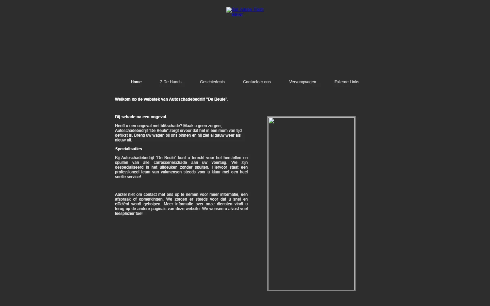
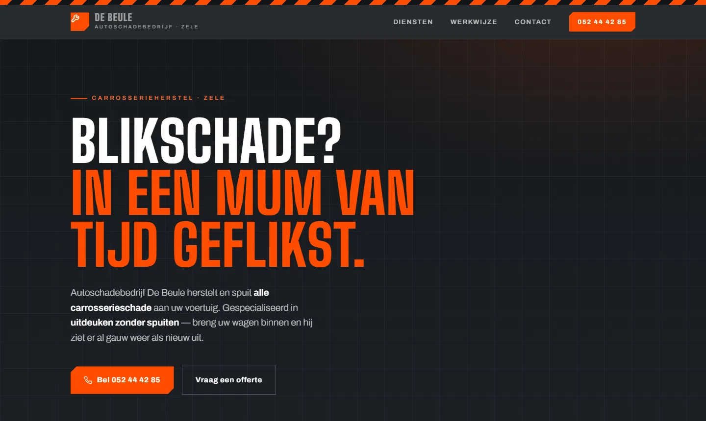

webstudio · Oost-Vlaanderen
Je zaak groeide. Je website bleef staan.
Midnight Space herbouwt verouderde websites voor zaken in Oost-Vlaanderen — Zele, Dendermonde, Aalst, Sint-Niklaas. Vanaf nul getekend, geen sjablonen. Hieronder zie je wat dat betekent.
geen telefoontjes · geen verplichtingen · één e-mail
Bekijk de herbouw

Dit voorstel werd gemaakt zonder dat de zaakvoerder er iets voor vroeg — of voor betaalde.
conceptstudie · nog niet in productie
Misschien kreeg je al een mail van mij.
Eerst zien, dan beslissen.
Ik zoek zaken in de streek met een verouderde website — of helemaal geen.
Ik maak eerst een gratis voorstel voor je homepage en mail het je. Ongevraagd, af, klaar om te bekijken.
Je betaalt pas als je de volledige website wil. Wil je die niet? Dan heeft het je niets gekost — zelfs geen vergadering.
geen offerte vooraf / geen voorschot / geen verplichting
Geen offerte vol beloftes. Een voorstel dat al bestaat.
Wat je wél mag verwachten
- mobiel eerst
- Ontworpen op een telefoonscherm, want daar kijken je klanten.
- snel
- Licht gebouwd — geen zware thema's, geen trage plug-ins.
- geen sjablonen
- Elk ontwerp begint op een leeg blad, getekend voor jouw zaak.
- rechtstreeks
- Je mailt met de persoon die je site ontwerpt én bouwt. Niemand ertussen.
Eén e-mail. Meer moet dat niet zijn.
Waarom alleen e-mail? Alles staat zwart op wit, en je beslist in je eigen tempo.
— Jordan